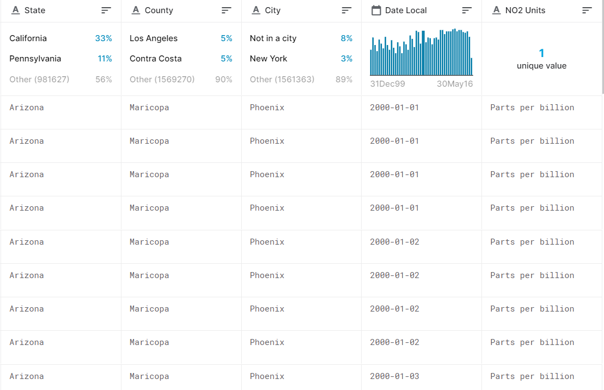

Data source: data.world https://data.world/data-society/us-air-pollution-data
File size: 411.49MB
The dataset contains 1,746,661 rows and 28 columns of air pollution data documented by the U.S. EPA on a daily basis from 2000 to 2016. It contains information about four pollutants: Nitrogen Dioxide (NO2), Sulphur Dioxide (SO2), Carbon Monoxide (CO) and Ozone (O3).In addition, the dataset includes the state, city, address, and date of monitoring.
The U.S. Air Pollution data was generally clean and did not require a lot of manipulation. We removed “Country of Mexico” and all related data as our study focused solely on the United States. We also made the decision to choose 1 pollutant to focus on in the interest of time. We chose to focus on the pollutant Nitrogen Dioxide as it is the most harmful to humans. High concentrations of Nitrogen Dioxide in the atmosphere can irritate the airways in the human respiratory system causing coughing, wheezing or difficulty breathing. Prolonged exposure to Nitrogen Dioxide can make the lungs more susceptible to infection, asthma and respiratory disease. In addition to this, Nitrogen Dioxide can mix with other gases in the atmosphere to produce haze, acid rain and contribute to nutrient pollution in the coastal waters (epa.gov).
Data was grouped two ways for analysis of each hypothesis. First, data was grouped by year to complete the year-over-year analysis. Next, data was grouped by region to complete the regional analysis. States were grouped into regions based on the regional chart located on the U.S. Embassy website. The four regions were; West, Midwest, South and Northeast.
Dataset (sample of 100 records):